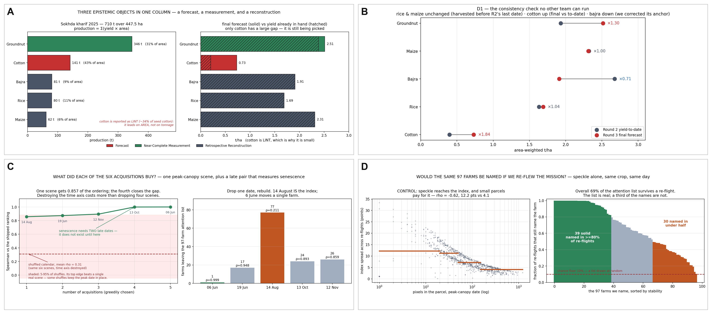

AISEHack 2.0 · Goa Grand Finale · Midnight Check-in
Team T1 · 966 farm plots · 447.5 ha · Sokhda, Vadodara, Gujarat · kharif 2025
| Domain | Remote Sensing - Precision Agriculture / Crop Yield Forecasting |
| Primary data | 6 × Capella X-band HH SLC (6 Jun · 19 Jun · 14 Aug · 13 Oct · 29 Oct · 12 Nov 2025) + 966-parcel cadastral boundaries |
| Ancillary | Sentinel-1 GRD/RTC via Microsoft Planetary Computer (anonymous STAC, 2016-2025) · Sentinel-2 L2A witness · ERA5-Land · MOAFW Crop Weather Watch + Gujarat DES · USDA FAS MY2025/26 |
| Ground truth | None exists for this village. PMFBY village CCE yields are gated behind an officer login; no plot-level harvest record is public. Every validation below is an external-consistency test and is labelled as one. |
Pipeline.
| 1 · Radiometry β⁰ = SF²·|z|², terrain-flattened to γ⁰. Squared scale factor, verified against the vendor's own NESZ. | 2 · Parcel series Per-plot γ⁰, 966 polygons × 6 dates. Negative-buffer ladder −5/−2/0 m, boundary-pixel audit. | 3 · Health index Five named parts: level, growth, uniformity, persistence, senescence. Fixed weights, nothing fitted. |
| 4 · Crop map Trajectory-shape labels, 5 classes. The only place the SAR touches the village total. | 5 · Anchor × modifier Level from a published statistic, ordering from the radar, conservation constraint applied. | 6 · Product Σ(yield × area) per plot, per 500 m zone, per crop, every row typed by epistemic object. |
Cross-cutting: ERA5-Land and MOAFW enter as gates and corrections, never as predictors: 29 Oct is excluded from level features on a measured wind/rain confound, and cotton completion is dated to the MOAFW report of 10 Nov 2025. A nine-year Sentinel-1 climatology tests the one assumption the Capella stack cannot reach. A 19-check defensibility harness, thresholds fixed before each run, wraps the whole pipeline
There is no harvest record for Sokhda, so a supervised yield regressor would be fitted against labels we invented ourselves, and its R² would measure our own consistency rather than the crop. The pipeline is instead an unsupervised, physically parameterised feature construction (five named backscatter descriptors, fixed weights, nothing fitted to an outcome) driving a dasymetric anchor-plus-modifier estimator under a hard conservation constraint, wrapped in an adversarial control harness. Every model with more free parameters than observations was killed on identifiability, not on taste (§4, Technical challenges & pivots).
N1 · Epistemic typing of the output column. Forecast, measurement and reconstruction are three different objects, and one undifferentiated tonnage silently mixes them. We type every row against the crop calendar and the acquisition window: cotton (43% of area) is a genuine forecast, picking runs to January and ≈72% was still on the plant at our last scene; groundnut (31%) is a near-complete measurement, its yield determined at physiological maturity in late October, inside our window; rice, maize and bajra (26%) are retrospective reconstructions, their seasons closed before the imagery. The forecast horizon is not uniform across the village, and we say where it is short and where it is long.
N2 · A conservation constraint that separates level from ordering by construction, the brief's "plausibility constraint", enforced structurally rather than penalised in a loss:
|
yield[plot] = anchor(crop) × modifier[plot], with area-weighted mean(modifier) ≡ 1.0 within each crop
⇒ village total = Σc anchorc × areac, mathematically invariant to the imagery, asserted to 3.3×10⁻¹⁶ across an 8-member leave-one-date-out ensemble.
|
The gain is auditability: the radar cannot smuggle a level in, so the imagery's contribution reduces to two statements, the ordering of plots within a crop and which crop each plot is, and each can be attacked separately. What we inject (the anchor; a literature prior YIELD_SPREAD = 0.30) is published rather than buried.
N3 · A nine-year radar climatology, relative level without a label. Absolute level needs a label and we have none; relative level needs a history, and Sentinel-1 has nine years over this village on a single track, so the look-side and incidence mixing that normally dominates multi-year SAR comparison is absent (checked, not assumed: the Oct-Nov window is mixed and was dropped). It tests our own assumption that 2025 was an ordinary year. Measured twice, farm pixels against non-farm pixels in the same AOI, the raw farm anomaly is z = +1.20, reading as "bright year, good season"; but the non-farm control moved further, +1.39, so the difference is −0.16. The control reversed the naive reading.
N4 · Adversarial self-audit as a deliverable. The forecast was frozen, and only then did we build ten further approaches against kill criteria written down in advance. Six died: the Water Cloud Model on identifiability, SAFY on optical availability, C-band fusion on a held-out date, and a label-fusion validation scheme voided by a provenance control we had built to catch exactly that. None of the survivors changed a shipped number, which is the point: a frozen number cannot be flattered by a test.
| Test, threshold fixed before the run | Result | What a failure would have meant |
|---|---|---|
| D1 backcast consistency against our own Round 2, per crop, bands pre-registered | 6 / 6 pass | Crops harvested before R2's last date must reproduce (rice ×1.04, maize ×1.00); a still-picking crop must rise (cotton ×1.84). No other team has a Round 2 to check against. |
| Physical admissibility, darkest content vs the vendor's declared noise floor | 0 / 6 below | In σ⁰ all six scenes sit under the sensor's own noise, which is impossible. The residual's sign is a harder test than its magnitude, and it is what proved the SF² convention. |
| Speckle re-flight, 500 replicates, Gamma(k = npix·F), index rebuilt by the shipped code | 0.686 ρ = 0.855 | Retention of the 97-farm attention list against a chance floor of 0.10; below it, per-farm advice would be noise. 39 farms return in ≥80% of re-flights and 30 in under half, and we ship that column. |
| Field-scale attribution, variogram, Moran's I, core-only rebuild with a matched-N random null | 96% ρsize = −0.017 | The median parcel is 45% boundary pixel; if the ranking were the neighbourhood or the outline, a per-farm list would be indefensible. And no parcel-size bias across a 40× area spread, the fairness property a smallholder village needs. |
| Value of information, leave-one-date-out and greedy forward selection | 0.857 → 0.9993 | It shrank our own claim: a peak-canopy index with temporal corrections, not a season-long trajectory model. It also justifies Round 3's two extra scenes, since senescence is a slope and does not exist until a second late date arrives. |
| Witness transfer (same-day Sentinel-2, both spatial halves) · regression suite · full harness | ρ .52/.69 12/12 · 19/19 | An independent instrument agreeing on ordering within crop, reported per half so a one-sided result is visible; and every historical failure mode of this pipeline pinned by a test that fails loudly. |

A the deliverable, coloured by epistemic object: 710.0 t over 447.5 ha (1.587 t/ha); solid vs hatched is final forecast against yield already in hand, and only cotton carries a large gap, because only cotton is still being picked. B D1, the consistency check no other team can run: Round 2's yield-to-date against Round 3's final forecast, per crop, against ratio bands written down before the forecast existed. Crops harvested before R2's last date reproduce (×1.04, ×1.00), cotton rises as a final must (×1.84), bajra falls because we corrected its anchor. C value of information per acquisition: one peak-canopy scene gets ρ = 0.857 of the shipped ordering, the fourth closes the gap; withhold 14 August and 77 of the 97 named farms change. D the re-flight test, same crop, sensor and day, a different realisation of speckle: 69% of the list survives against a 10% chance floor, and a third of the names do not.
| Crop | Area ha | t/ha | Prod. t | Object |
|---|---|---|---|---|
| Cotton (lint) | 193.4 | 0.730 | 141.2 | forecast |
| Groundnut | 137.7 | 2.514 | 346.1 | measurement |
| Rice | 47.4 | 1.690 | 80.2 | reconstruction |
| Bajra | 42.3 | 1.910 | 80.8 | reconstruction |
| Maize | 26.7 | 2.312 | 61.8 | reconstruction |
| All · 966 plots | 447.5 | 1.587 | 710.0 | three objects |
Sub-village product. A fixed 500 m grid gives 46 zones of ≥5 farms spanning health indices 36.6 to 76.3, 39.7 points of variation hidden behind the single village row, each zone carrying its own uncertainty column.
No held-out yields exist for Sokhda at any date, so a predicted-vs-actual scatter would be a fabrication. We hold out the two things we can. Space: weights, rank transfer and the Sentinel-2 witness relationship refitted in one spatial half and applied to the other, 7 / 9 pass, the two failures reported rather than deleted. Time: leave-one-date-out, whose control case has a known answer and aborts the run if it is not returned exactly.
Uncertainty is reported as four separate terms, because conflating them is how a confidence number stops being one: sampling 5.8 health pts/farm · structural 0.028 t/ha per farm and 0.0 t at village level (zero by construction, N2) · crop label, Monte Carlo over our own posterior, 40.7 t · anchor 385.2 t, which dominates every other term combined. Label and anchor together put the village total in [516, 904] t. We publish no confidence level: conformal coverage is 1−α−β, and with no ground truth β is the same unknown wearing a different hat.
| Roadblock | Verdict | Why it underperformed, and how we adapted |
|---|---|---|
| Water Cloud Model, the obvious route to an absolute retrieval | killed, unidentifiable | More free parameters than observations. Retried after the freeze and shown incapable of contributing, not merely unlucky. It left a one-line identifiability test we now apply to any candidate model. |
| SAFY growth model, written almost verbatim for "calibrate without in-situ data" | killed on availability | γ⁰ does rank canopy within crop against same-day NDVI (ρ = 0.52 cotton), but only 2 of 6 dates have a same-day optical partner and neither is in the Jun-Sep window SAFY integrates. You cannot calibrate a growth model on a proxy you can only validate after the growth is over. |
| Dawid-Skene label fusion, run purely as a validation cross-check on our crop map, never as an input to the deliverable | won, then voided | It beat every single-source label set it was compared against, but the provenance control we had built to catch exactly this could not separate a more correct label from a label that had seen another instrument. The win is unattributable, so it was discarded on our own control and the shipped crop map is unchanged by it. |
| X-band + Sentinel-1 C-band fusion | real information, rejected | Better on the date we looked at, worse on the held-out one. The held-out date is the one that counts. |
| Our own Round 2 results | two self-corrections | The calibration convention, β⁰ = SF²·|z|² rather than SF·|z|²; and the bajra anchor, which we had set too high and revised down by a factor of 0.71. Both ran against us, and both are visible in the D1 panel above. |
| Dead Earth Engine credential | routed around | Microsoft's Planetary Computer serves Sentinel-1 RTC through an anonymous STAC endpoint, no account and no key. It replaced the blocked path and made three post-freeze experiments possible, the climatology among them. |
The forecast is frozen at 710.0 t / 447.5 ha / 1.587 t/ha, and no task below moves it - the shipped submission.csv is checksum-pinned and re-verified at the end of every block. What the next ten hours can still improve is everything around it: the resolution of the product, the honesty of its error bars, and how much can be independently re-derived from the repository alone. Each block pairs a verification task with the improvement it makes possible, and each carries an exit condition that can fail. With the number fixed in advance, an experiment can only report something true about the method; it cannot make the forecast look better.
| Block | Task, improvement, and exit condition |
|---|---|
| H+0 → 2 | Clean-clone reproduction. Rebuild end-to-end from a fresh checkout on a second machine. Improvement: any non-determinism this exposes is pinned by an explicit seed rather than left to chance. Exit: byte-identical submission.csv, 12/12 regression, 19/19 defensibility, figures regenerated. |
| H+2 → 4 | Submission-format dry run against the host template: column names, units, plot-ID join, row count = 966. Improvement: if the template admits extra columns, we ship per-plot uncertainty and re-flight stability alongside yield instead of a bare number. Exit: a template-conformant file. In Round 2 a template caught a 1000× unit error every internal check had passed. |
| H+4 → 6 | Anchor sensitivity sweep. Re-run the village total across the published range of each crop anchor. Improvement: this converts our largest single uncertainty, 385.2 t, from a stated assumption into a table a jury can read, without touching the shipped forecast. Exit: a per-crop sensitivity row for all five crops. |
| Block | Task, improvement, and exit condition |
|---|---|
| H+6 → 8 | Deliverable packaging and the sub-village product. Per-plot CSV (966 rows: yield, production, health index, uncertainty, re-flight stability) plus the 46-zone summary. Improvement: the 97-farm attention list ships in stability tiers, not as a flat list, so a reader knows which names to act on first. Exit: privacy gate re-run, no owner names or linked survey numbers in any published file. |
| H+8 → 9 | Documentation freeze and adversarial rehearsal. Cross-reference sweep over the writeup, the research log (P3-14 → P3-23) and the finale deck. Improvement: every claim must trace to the script and table that produced it, and any claim that cannot is cut rather than softened. Exit: the four hardest questions we can ask ourselves, answered in under a minute each: your modifier contributes 0.0 t, so what did the radar do · your anchor is someone else's statistic · a third of your named farms are unstable · 29 Oct is in a flood. |
| H+9 → 10 | Submission and handover. This check-in as PDF, repository access, credential rotation, and a final secret-scan of everything published. Improvement: the repository is left in a state a stranger can run, the only durable form of a defensibility claim. Exit: one command reproduces the deliverable. |
Experiments still running: none that can change a shipped number, by design. One scientific item stays open: we could not internally test our own harvest-timing claim, so the epistemic split still rests on published crop calendars.
Appendix. Code: github.com/Jenish-fngghd/AISEHACK-2.0-T1-R3 (private until the round closes; access on request). Vendor SLCs, derived rasters and any record carrying an owner name are excluded from the repository by policy. · Data: Capella Space X-band SLC (challenge issue) · Sentinel-1 GRD/RTC via Microsoft Planetary Computer STAC · Sentinel-2 L2A · ERA5-Land · MOAFW Crop Weather Watch Group weekly report, 10 Nov 2025 · Directorate of Economics & Statistics, Gujarat · USDA FAS Cotton MY2025/26. · References: Attema & Ulaby (1978), Water Cloud Model, Radio Science 13(2) · Duchemin et al. (2008), SAFY, Int. J. Remote Sensing 29(6) · Dawid & Skene (1979), Applied Statistics 28(1) · Sharma & Goyal (1999), cotton picking distribution · Angelopoulos & Bates (2023), conformal prediction.